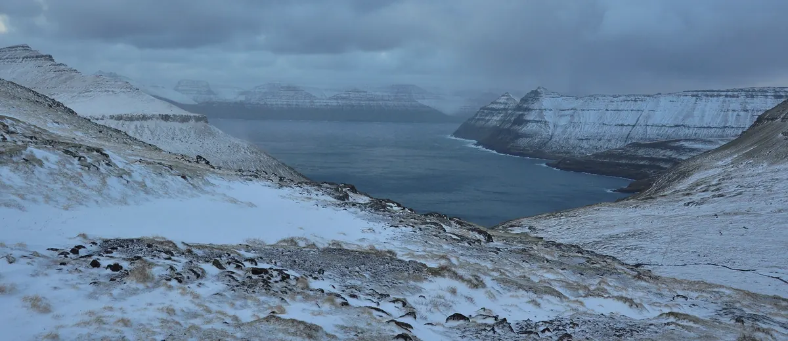
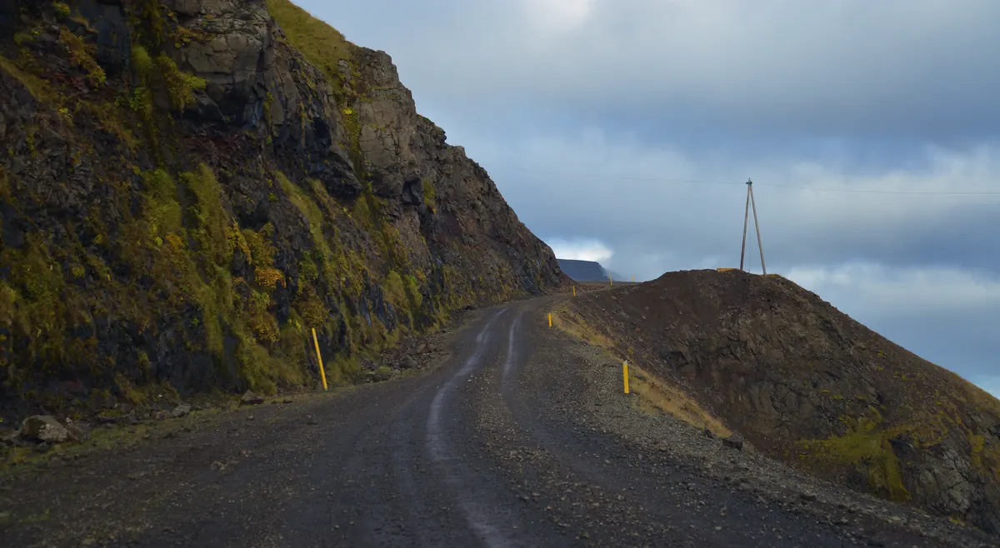

Del horno de las cinco

Centeno con semillas de girasol y miel de la vereda. Sale una vez al día.
Del tostador de barrio
Café de filtro, tostado los jueves y servido hasta el mediodía.
Recibo de la semana
pedido 0412
masa madre 900 g ........ 18.000
centeno semillas ........ 16.500
café de filtro 250 g .... 24.000
total ................... 58.500